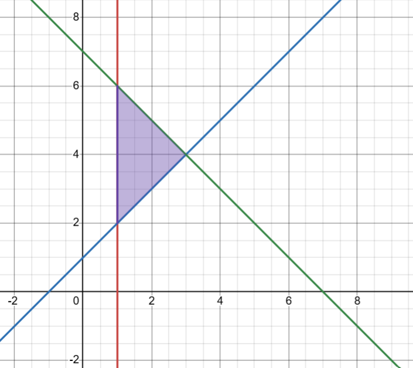

The sketch shows the graphs of the straight lines with equations:
y = x + 1, y = 7 − x and x = 1
a Work out the coordinates of the points of intersection of the functions.
b Write down the set of inequalities that represent the shaded region shown in the sketch.

Solution:
Part (a): Coordinates of Intersection
Step 1: Identify the three boundary lines
Line 1: x = 1 (Vertical line)
Line 2: y = x + 1 (Line with positive gradient, passing through -1 on x-axis)
Line 3: y = 7 − x (Line with negative gradient, passing through 7 on x-axis)
Associate the equations with the visual lines on the graph.
Step 2: Intersection of x = 1 and y = x + 1
Substitute x = 1 into y = x + 1:
y = 1 + 1 = 2
Point A: (1, 2)
Step 3: Intersection of x = 1 and y = 7 − x
Substitute x = 1 into y = 7 − x:
y = 7 − 1 = 6
Point B: (1, 6)
Step 4: Intersection of y = x + 1 and y = 7 − x
Set the two expressions for y equal to each other:
x + 1 = 7 − x
2x = 6
x = 3
Substitute x = 3 back into either equation:
y = 3 + 1 = 4
Point C: (3, 4)
Part (b): Set of Inequalities
Step 5: Analyze the vertical boundary (x = 1)
The shaded region is to the right of the line x = 1.
The line is solid, so the symbol will be ≥ or ≤.
Inequality: x ≥ 1
Right means greater than (>), Left means less than (<).
Step 6: Analyze the bottom boundary (y = x + 1)
The shaded region is above the line y = x + 1.
The line is solid, so the symbol will be ≥ or ≤.
Inequality: y ≥ x + 1
Above means greater than (>), Below means less than (<).
Step 7: Analyze the top boundary (y = 7 − x)
The shaded region is below the line y = 7 − x.
The line is solid, so the symbol will be ≥ or ≤.
Inequality: y ≤ 7 − x
Above means greater than (>), Below means less than (<).
✨ Final Answer:
a The points of intersection are (1, 2), (1, 6) and (3, 4).
b The inequalities are x ≥ 1, y ≥ x + 1 and y ≤ 7 − x. ✨